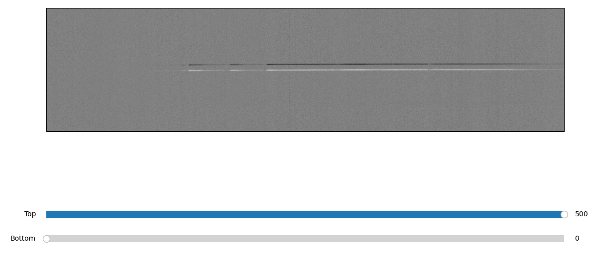
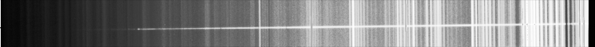

Cropping of images¶
Note
This procedure is not necessary for the pipeline to work, but can improve the quality of sky-subtraction and object-tracing. If you are using A-B background subtraction, you should crop the images only after the A-B subtraction, else the subtraction can be miss-aligned.
Quickstart¶
The procedure is called by the command:
pylongslit_crop PATH_TO_CONFIG_FILE
The procedure will start an interactive window where you can use two sliders in order to crop the image in the spatial direction (you can press “h” to normalize if the image is too dark):
{kind=link}
This cropping can help with later sky-subtraction and object-tracing. From experience, it is best to crop the image such that sufficient amount of sky is left on the image - around 100 pixels on each side of the object trace, as this allows for better sky estimation. You also don’t want the object too close to the edges when performing object-tracing. A cropped science image that shows good end-results for the GQ1218+0832 dataset is shown below as an example:
{kind=link}